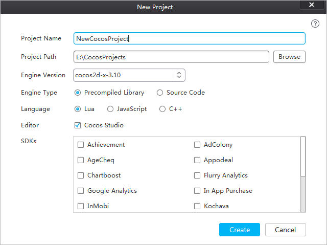
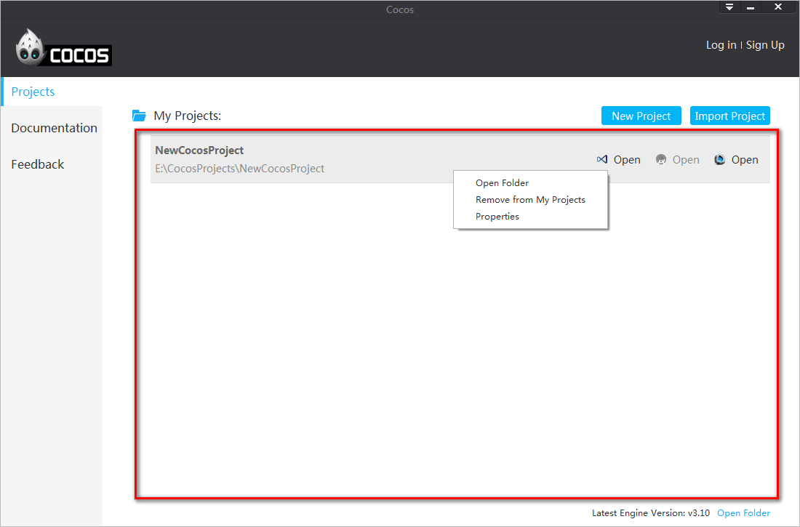
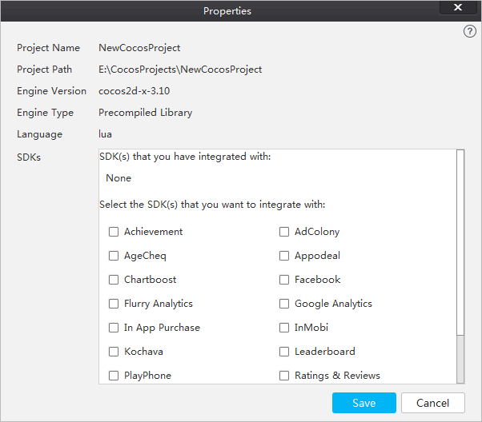
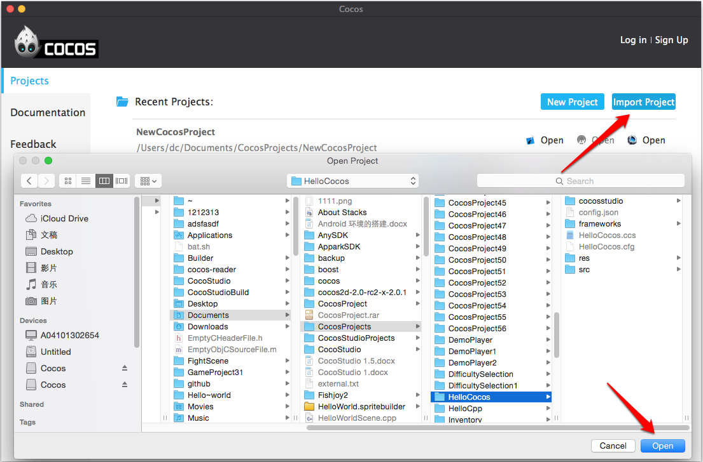
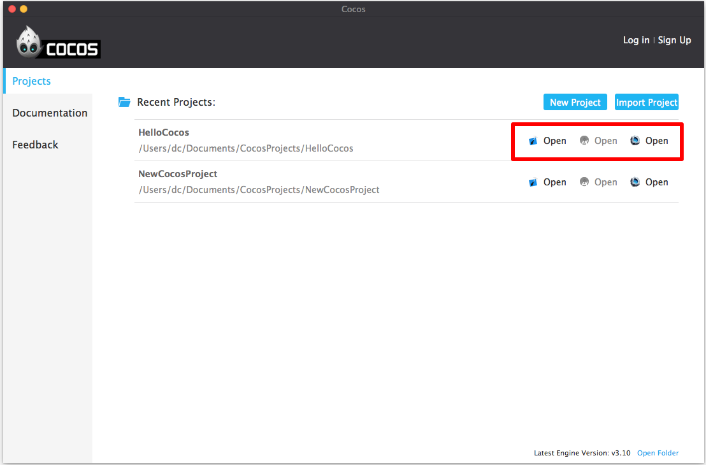
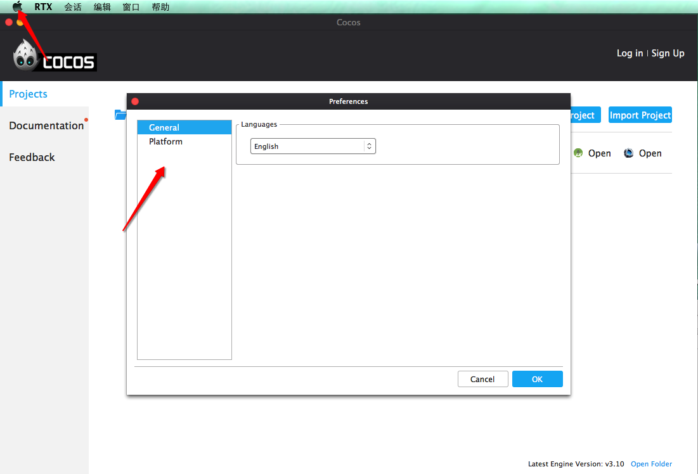
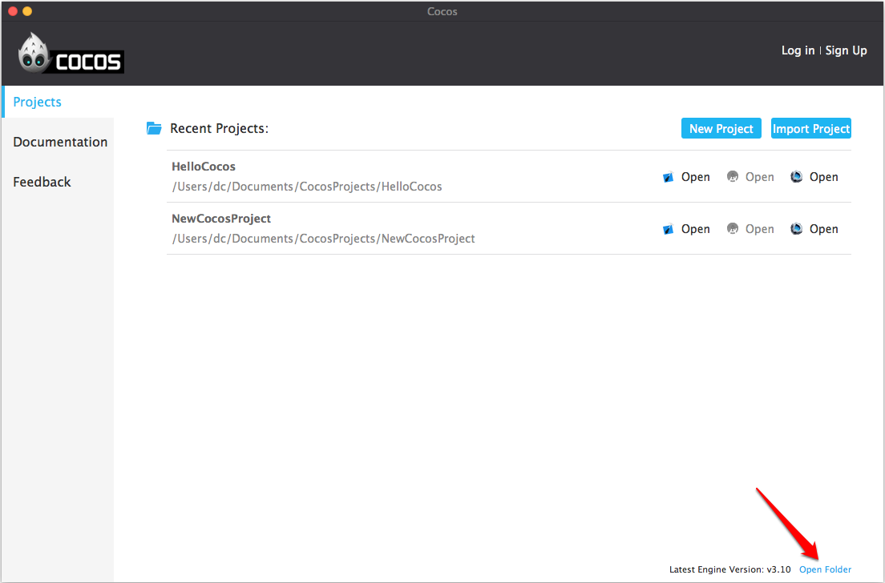
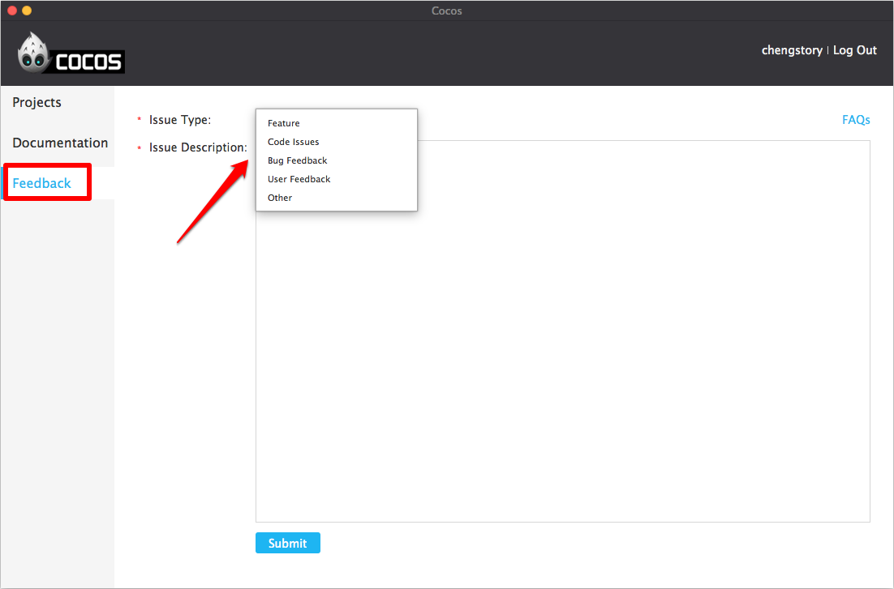

Cocos launcher
With Cocos launcher, you can quickly create projects, import projects and integrate with SDKs.
1. New Project
Follow the steps below to create a project.
- Open cocos launcher
- Click New Project
- Specify your project settings
- Click Create

Project Name：the name of the project to be created.
Project Path：the folder in which your projects are located.
Engine Version：version of cocos2d-x you use to create projects.
Engine Type：
Precompiled Library: a static library of the cocos2d-x source code. This would speed up compile times as there is no need to continually build the engine’s source.
Source Code: cocos2d-x source code.
Language：
Lua：based on cocos2d-x Lua binding. It can run on Android, iOS, Windows Phone, Windows, Mac.
JavaScript：based on cocos2d-js, also includes cocos2d-x JavaScript bindings. The JavaScript bindings are compatible with HTML5. You can run code in cocos2d-x runtime and HTML5 native engine. The default settings will be JavaScript bindings if the projects are built for running on Android, iOS, Windows Phone, Windows and Mac. The default settings will be cocos2d-js if the projects are for HTML5.
C++：based on cocos2d-x, It can run on Android, iOS, Windows Phone, Windows, Mac.
Editor：whether or not to create a project of cocos, the official editor of cocos2d-x.
SDKs：select SDKs to be integrated with.
2. Recent Projects
Newly created projects are added to the Recent Projects list.

right-click “Property” will open the “Edit Project” window displays the current project information as well as a secondary integrate services.

3. Import Project
You can create a project by importing one available on your computer.
Click Import Project
Select the project to be imported
Click Select Folder on Windows, or Open on Mac.

4. Open
Click Open to open the selected project in Visual Studio, Android Studio or cocos studio. As you hover the mouse over the each of the icons, you will see a tool-tip text describing its functionality.

5. Preferences…
- Click the triangle button at the top right of the screen.
- Choose Preferences….
- Specify preferences for cocos launcher.

6. Open Folder
Click Open Folder at the right bottom of the screen to open the cocos folder, including cocos2d-x source codes .

7. Other Options
In addition to Projects, you can view the Documentation and provide Feedback on the sidebar.
Documentation
Click Documentation on the left, you will see cocos2d-x manual, cocos2d-x API and cocos studio manual.
Feedback
Click Feedback to send us your suggestions or report any problems. Select an appropriate issue type and edit the issue description. A member of the cocos Technical Support Team will contact you via e-mail.
Note: Please login before trying to send feedback.

扫描二维码或在微信中搜索 KeepMovingXin